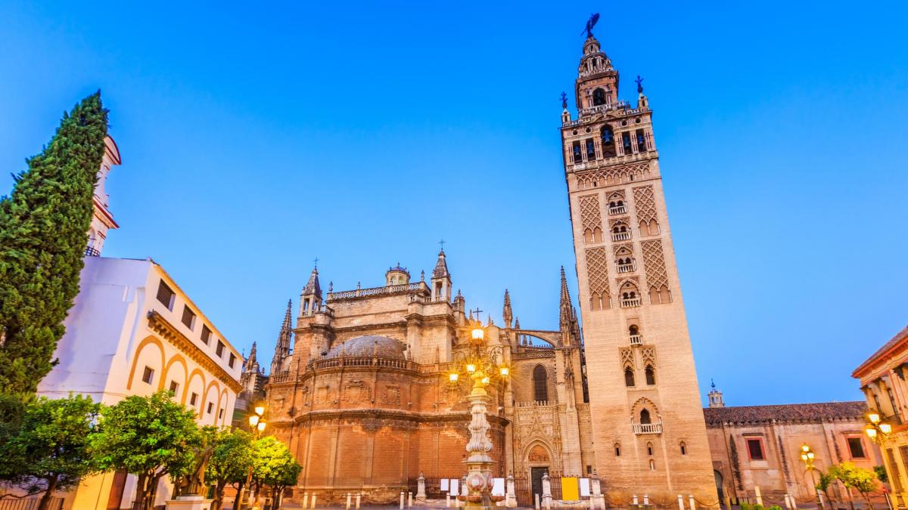
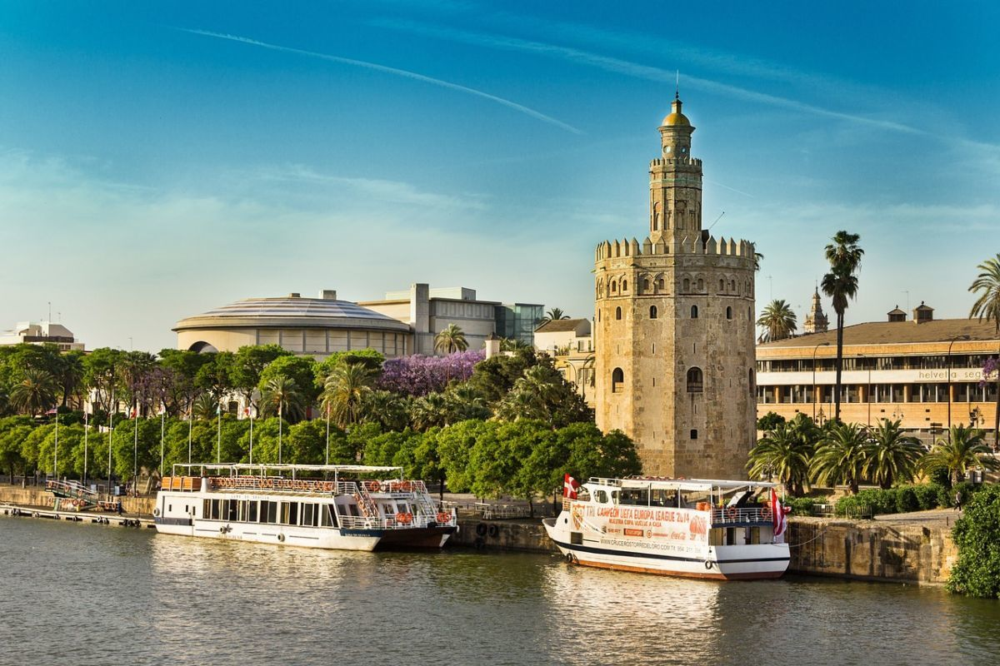

Monumentos

Catedral de Sevilla y Giralda
La catedral gótica más grande del mundo, construida sobre una antigua mezquita almohade. La Giralda, su campanario, ofrece vistas panorámicas de la ciudad. Alberga la tumba de Cristóbal Colón.

Real Alcázar de Sevilla
Palacio real en uso más antiguo de Europa, con arquitectura mudéjar, renacentista y barroca. Sus jardines, patios y estancias reflejan la riqueza histórica de los Reyes de Sevilla.

Torre del Oro
Esta torre albarrana del siglo XIII, construida por los almohades, servía como punto de control del río Guadalquivir. Hoy alberga el Museo Naval de Sevilla.